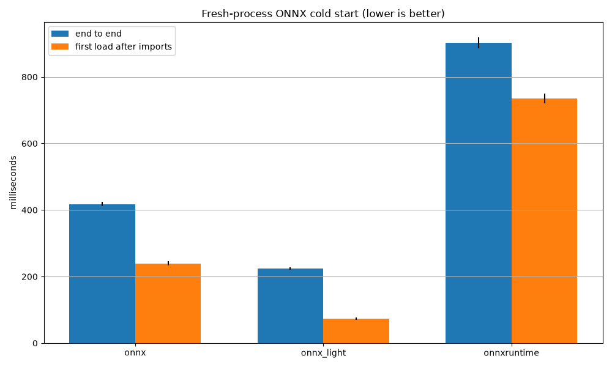

Note
Go to the end to download the full example code.
Measures fresh-process ONNX model-load cold start#
This example measures model loading in a new Python process for every sample. Unlike Measures loading and saving time for an ONNX model, it deliberately performs no warm-up and never combines these results with steady-state measurements.
end_to_end_ms includes Python interpreter startup, imports, and one model
load. first_load_after_imports_ms starts immediately after the selected
implementation has been imported in that new process and measures that one
load. On POSIX platforms, peak_rss_kib reports the process high-water RSS
during startup and loading.
A fresh process is not necessarily a cold filesystem cache: the operating system may retain model files and shared libraries in its page cache. Dropping that cache requires privileged, platform-specific operations, and is not done by this benchmark. The graph compares the average end-to-end and post-import load times; its error bars show the population standard deviation.
Use --model <path> to measure a supplied ONNX model. Without it, the
example creates the same synthetic Gemm-chain model used by
Measures loading and saving time for an ONNX model; --external writes its weights to a
companion external-data file.

Fresh-process cold start (filesystem page cache may still be warm)
end_to_end_ms includes interpreter startup, imports, and one model load.
first_load_after_imports_ms includes only one load after imports.
sample=1 {"end_to_end_ms": 414.66845900004046, "first_load_after_imports_ms": 238.2308319997719, "implementation": "onnx", "peak_rss_kib": 3403404}
sample=2 {"end_to_end_ms": 408.2930159997886, "first_load_after_imports_ms": 230.41243800025768, "implementation": "onnx", "peak_rss_kib": 3403404}
sample=3 {"end_to_end_ms": 421.18180900024527, "first_load_after_imports_ms": 240.34409700016113, "implementation": "onnx", "peak_rss_kib": 3403404}
sample=4 {"end_to_end_ms": 428.9307439998993, "first_load_after_imports_ms": 249.32100099977106, "implementation": "onnx", "peak_rss_kib": 3403404}
sample=5 {"end_to_end_ms": 416.8756960002611, "first_load_after_imports_ms": 239.7635839997747, "implementation": "onnx", "peak_rss_kib": 3403404}
sample=1 {"end_to_end_ms": 224.96331599995756, "first_load_after_imports_ms": 74.17949599994245, "implementation": "onnx_light", "peak_rss_kib": 3403404}
sample=2 {"end_to_end_ms": 218.5144160002892, "first_load_after_imports_ms": 67.56072400003177, "implementation": "onnx_light", "peak_rss_kib": 3403404}
sample=3 {"end_to_end_ms": 223.64902900017114, "first_load_after_imports_ms": 70.50560400011818, "implementation": "onnx_light", "peak_rss_kib": 3403404}
sample=4 {"end_to_end_ms": 230.35900300010326, "first_load_after_imports_ms": 78.36906000011368, "implementation": "onnx_light", "peak_rss_kib": 3403404}
sample=5 {"end_to_end_ms": 225.79682500008857, "first_load_after_imports_ms": 72.80197799991583, "implementation": "onnx_light", "peak_rss_kib": 3403404}
sample=1 {"end_to_end_ms": 878.2233780002571, "first_load_after_imports_ms": 714.2662339997514, "implementation": "onnxruntime", "peak_rss_kib": 3403404}
sample=2 {"end_to_end_ms": 926.4943270000003, "first_load_after_imports_ms": 758.7490119999529, "implementation": "onnxruntime", "peak_rss_kib": 3403404}
sample=3 {"end_to_end_ms": 904.5726770000329, "first_load_after_imports_ms": 736.777290000191, "implementation": "onnxruntime", "peak_rss_kib": 3403404}
sample=4 {"end_to_end_ms": 909.0763029998925, "first_load_after_imports_ms": 742.2884300003716, "implementation": "onnxruntime", "peak_rss_kib": 3403404}
sample=5 {"end_to_end_ms": 891.4231590001691, "first_load_after_imports_ms": 724.6978790003595, "implementation": "onnxruntime", "peak_rss_kib": 3403404}
import argparse
import json
import os
import pathlib
import statistics
import subprocess
import sys
import tempfile
import time
N_INIT = 40
DIM = 256 if os.environ.get("UNITTEST_GOING") == "1" else 2048
IMPLEMENTATIONS = ("onnx", "onnx_light", "onnxruntime", "onnx_ir")
DEFAULT_IMPLEMENTATIONS = IMPLEMENTATIONS[:3]
def make_model(n_init: int = N_INIT, dim: int = DIM):
"""Returns a synthetic ONNX model with Gemm initializers."""
import numpy as np
import onnx_light.onnx as onnxl
import onnx_light.onnx.helper as oh
import onnx_light.onnx.numpy_helper as onh
initializers = []
nodes = []
inputs = [oh.make_tensor_value_info("X", onnxl.TensorProto.FLOAT, [None, dim])]
previous = "X"
for index in range(n_init):
weight_name = f"W{index}"
output_name = f"Y{index}"
initializers.append(
onh.from_array(np.random.randn(dim, dim).astype(np.float32), name=weight_name)
)
nodes.append(oh.make_node("Gemm", [previous, weight_name], [output_name], transB=1))
previous = output_name
graph = oh.make_graph(
nodes,
"cold_start_bench_graph",
inputs,
[oh.make_tensor_value_info(previous, onnxl.TensorProto.FLOAT, [None, dim])],
initializer=initializers,
)
return oh.make_model(graph, opset_imports=[oh.make_opsetid("", 18)], ir_version=9)
def _save_default_model(model, directory: str, external: bool) -> str:
"""Saves a synthetic model and returns its ONNX path."""
import onnx_light.onnx as onnxl
path = os.path.join(directory, "bench.onnx")
if external:
onnxl.save(
model, path, save_as_external_data=True, location="bench.onnx.data", size_threshold=0
)
else:
onnxl.save(model, path)
return path
def _load_once(implementation: str, model_path: str) -> None:
"""Loads a model once using the requested implementation.
Constructs and discards an ``onnxruntime.InferenceSession`` for the
``onnxruntime`` implementation.
"""
if implementation == "onnx":
import onnx
onnx.load(model_path)
elif implementation == "onnx_light":
import onnx_light.onnx
onnx_light.onnx.load(model_path, load_external_data=True)
elif implementation == "onnxruntime":
import onnxruntime
options = onnxruntime.SessionOptions()
options.graph_optimization_level = onnxruntime.GraphOptimizationLevel.ORT_DISABLE_ALL
onnxruntime.InferenceSession(model_path, sess_options=options)
elif implementation == "onnx_ir":
import onnx_ir
onnx_ir.load(model_path)
else:
raise ValueError(f"Unknown implementation {implementation!r}.")
def _peak_rss_kib() -> int | None:
"""Returns peak RSS in KiB when the platform provides resource.getrusage."""
if os.name == "nt":
return None
import resource
rss = resource.getrusage(resource.RUSAGE_SELF).ru_maxrss
return rss // 1024 if sys.platform == "darwin" else rss
def _worker(implementation: str, model_path: str) -> None:
"""Synchronizes with the parent then loads the model exactly once."""
# Import separately so the parent can distinguish imports from the first load.
if implementation == "onnx":
import onnx # noqa: F401
elif implementation == "onnx_light":
import onnx_light.onnx # noqa: F401
elif implementation == "onnxruntime":
import onnxruntime # noqa: F401
elif implementation == "onnx_ir":
import onnx_ir # noqa: F401
else:
raise ValueError(f"Unknown implementation {implementation!r}.")
print("READY", flush=True)
sys.stdin.readline()
start = time.perf_counter()
_load_once(implementation, model_path)
print(
json.dumps(
{
"first_load_after_imports_ms": (time.perf_counter() - start) * 1e3,
"peak_rss_kib": _peak_rss_kib(),
}
),
flush=True,
)
def _run_sample(implementation: str, model_path: str) -> dict:
"""Runs one implementation in a fresh process and returns its measurements."""
command = [
sys.executable,
str(pathlib.Path(_run_sample.__code__.co_filename).resolve()),
"--worker",
implementation,
model_path,
]
start = time.perf_counter()
process = subprocess.Popen(
command, stdin=subprocess.PIPE, stdout=subprocess.PIPE, stderr=subprocess.PIPE, text=True
)
assert process.stdin is not None
assert process.stdout is not None
assert process.stderr is not None
ready = process.stdout.readline().strip()
if ready != "READY":
_, stderr = process.communicate()
raise RuntimeError(f"{implementation} did not initialize: {stderr.strip()}")
process.stdin.write("\n")
process.stdin.flush()
payload = process.stdout.readline()
_, stderr = process.communicate()
if process.returncode:
raise RuntimeError(f"{implementation} failed: {stderr.strip()}")
result = json.loads(payload)
result["implementation"] = implementation
result["end_to_end_ms"] = (time.perf_counter() - start) * 1e3
return result
def _parse_args(args: list[str] | None = None) -> argparse.Namespace:
"""Parses benchmark command-line arguments."""
parser = argparse.ArgumentParser(description="Measures fresh-process ONNX model loading.")
parser.add_argument("--model", help="Path to an existing ONNX model.")
parser.add_argument(
"--external", action="store_true", help="Store the synthetic model externally."
)
parser.add_argument(
"--samples", type=int, default=5, help="Fresh-process samples per implementation."
)
parser.add_argument(
"--implementations",
nargs="+",
choices=IMPLEMENTATIONS,
default=DEFAULT_IMPLEMENTATIONS,
help="Implementations to measure.",
)
parser.add_argument(
"--worker", nargs=2, metavar=("IMPLEMENTATION", "MODEL"), help=argparse.SUPPRESS
)
return parser.parse_args(args)
def _plot_results(results: list[dict], png_path: str = "plot_onnx_cold_start.png"):
"""Plots average cold-start timings and saves the graph."""
import matplotlib.pyplot as plt
implementations = list(dict.fromkeys(result["implementation"] for result in results))
end_to_end = [
[
result["end_to_end_ms"]
for result in results
if result["implementation"] == implementation
]
for implementation in implementations
]
first_load = [
[
result["first_load_after_imports_ms"]
for result in results
if result["implementation"] == implementation
]
for implementation in implementations
]
positions = range(len(implementations))
width = 0.35
_, axis = plt.subplots(figsize=(10, 6))
axis.bar(
[position - width / 2 for position in positions],
[statistics.fmean(values) for values in end_to_end],
width,
yerr=[statistics.pstdev(values) for values in end_to_end],
label="end to end",
)
axis.bar(
[position + width / 2 for position in positions],
[statistics.fmean(values) for values in first_load],
width,
yerr=[statistics.pstdev(values) for values in first_load],
label="first load after imports",
)
axis.set(
title="Fresh-process ONNX cold start (lower is better)",
ylabel="milliseconds",
xticks=list(positions),
xticklabels=implementations,
)
axis.legend()
axis.grid(axis="y")
axis.figure.tight_layout()
axis.figure.savefig(png_path)
return axis
def main(args: list[str] | None = None) -> None:
"""Runs the cold-start benchmark."""
parsed = _parse_args(args)
if parsed.worker:
_worker(*parsed.worker)
return
if parsed.samples < 1:
raise ValueError("--samples must be at least one.")
with tempfile.TemporaryDirectory(prefix="onnx_cold_start_") as directory:
model_path = (
os.path.abspath(parsed.model)
if parsed.model
else _save_default_model(make_model(), directory, parsed.external)
)
print("Fresh-process cold start (filesystem page cache may still be warm)")
print("end_to_end_ms includes interpreter startup, imports, and one model load.")
print("first_load_after_imports_ms includes only one load after imports.")
results = []
for implementation in parsed.implementations:
for sample in range(parsed.samples):
result = _run_sample(implementation, model_path)
results.append(result)
print(f"sample={sample + 1} {json.dumps(result, sort_keys=True)}")
_plot_results(results)
if __name__ == "__main__":
main()
Total running time of the script: (0 minutes 12.430 seconds)
Related examples

Measures loading and saving time for an ONNX model

Number of threads used to load and save ONNX models

Benchmark streaming vs in-memory alignment of external data
Gallery generated by Sphinx-Gallery
Example last updated
- Date:
2026-09-03